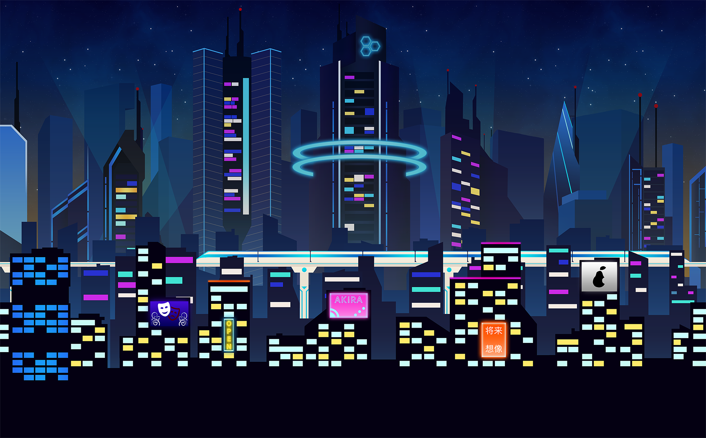

My Curiosity Moment
Misc.
Phantom
Mar 20, 2024
I believe that video games are the future of storytelling. Here's why.

1. You are part of the story.
Books and movies can do phenomenal jobs establishing worlds and giving them life. Star Wars, The Lord of the Rings, etc, are all good examples. But video games succeed here by making you part of the world. You control a character, you interact with other characters and the world around you. The stakes are more intense because now you want to preserve the world that you are so immersed in. You want to become stronger, explore every nook and cranny, and discover more about the world through your own observations.
Xenoblade Chronicles
This is one of my favorite series of all time. The 3 games span across 2 universes, and detail the struggles of different groups of characters as they fight against a pre-determined fate.


2. Your decisions can alter the story.
I think that video games are the perfect medium for the “choose-your-own-adventure” system. Although not many titles that I have played do this, there are some, such as Octopath Traveler and Live-A-Live. However, some games take a more interesting approach; there is one clear storyline, but some player decisions can lead to early endings, or “bad endings.” This style is unique because it doesn’t force the player’s hand, but rather gives them more freedom and lets them reconcile with their actions.
NieR: Automata
NieR: Automata is an open-world game set in a post-apocalyptic Earth that has been taken over by aliens and their force of machines. A special squadron of androids, known as YorHa, is tasked with defeating them. NieR: Automata is famous for having 26 different endings. However, only 5 of those endings are canonical. The rest are a result of the player choosing or failing to complete important story objectives.


3. There is more artistic expression.
Some video games can capture and define their own unique identity through visuals, artwork, and music. Doing so makes the themes and motifs of the game more memorable. Animation and graphics can bring worlds to life and create detailed characters that may not be as easy to portray through just words.
Persona 5 Royal
Persona 5 takes place in Tokyo, Japan, and centers around a high-school student who goes by the codename “Joker.” His reputation was ruined after being falsely accused of a crime. After discovering a world called the Metaverse, where the corrupted cognitions of people manifest, he uncovers a special power known as a Persona. He forms a group called the Phantom Thieves of Hearts, Persona-users who traverse the metaverse and defeat the shadows of the malevolent adults to make them repent for their sins in the real world.


4. Images can evoke strong emotions.
Sometimes, stories don’t have to have 20,000 plot twists or have an Avengers: Endgame Level climax to be powerful. Sometimes simplicity is key and works all the same. However, simplicity alone doesn’t attract an audience, which is why video games can make simple stories work. I mean, why else would a story about an Italian plumber who stomps on walking mushrooms to save a princess from a giant turtle be one of the bestselling franchises of all time? I think that the silliness and simplicity of the story, combined with iconic music and unique scenes make these games so successful.
Ori and the Blind Forest
Ori and the Blind Forest takes place in the forest of Nibel, which is withering away without the influence of its great Spirit Tree. Ori, a guardian spirit, fell from the tree as a newborn and was taken in by a creature named Naru, who raised Ori as her own. The decaying of the Great Tree causes a famine in the forest, and Naru dies of starvation to feed her child. Afterwards, Ori meets a small spirit named Sein, who guides Ori on a journey to restore the forest.
The sequel, Will of the Wisps, takes place in the forest of Niwen, where Ori and his owl friend Ku have been stranded and separated after an accident in a storm. Like Nibel, Niwen is in decay after the deterioration of its great tree. Ori must traverse and restore the land of Niwen in order to rescue Ku.


5. A great story doesn’t have to be explicitly told.
Going back to the theme of open-world and being immersed in the story, sometimes stories don’t have to be directly in your face. Some great stories are left untold, to be discovered or interpreted by the player. Games like Sky: Children of the Light and Minecraft have very subtle stories that may even fly under some players’ heads. But those who have an open mind and are open to interpretation may observe the subtle complexities of these games.
Minecraft
Minecraft is an open-world sandbox game in which the entire world is made of blocks. Players can choose to play in Creative Mode, where they have unlimited building materials and completely free movement, or Survival Mode, where players must gather materials, food, and tools, survive against monsters, and traverse different dimensions.


All of these games have influenced me in profound ways. From provoking my creativity to posing existential and philosophical questions, I truly believe that video games are overlooked as forms of storytelling, both by younger audiences that downplay them as mere entertainment, or by older audiences that consider them mind-numbing wastes of time. I hope that through our own endeavors to create games, we can change the minds of people who pass off these remarkable experiences.